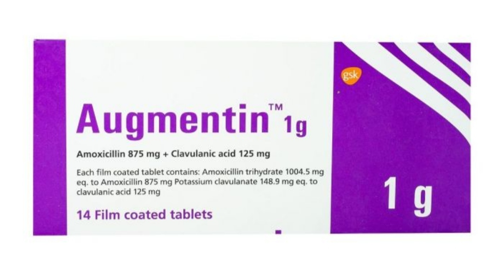
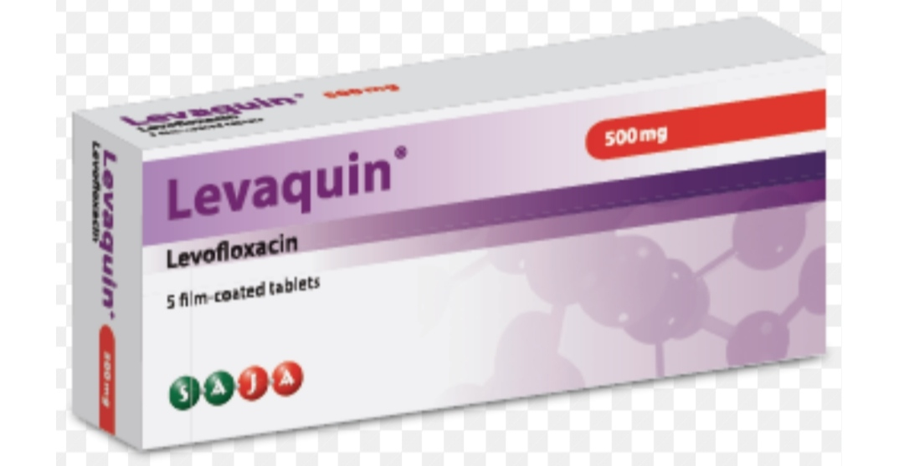
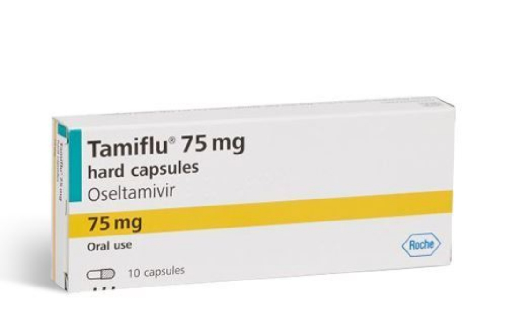
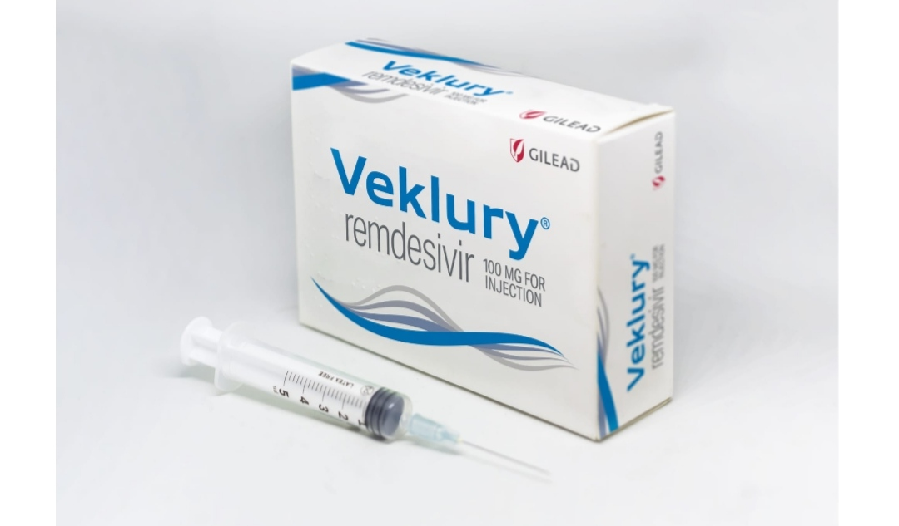
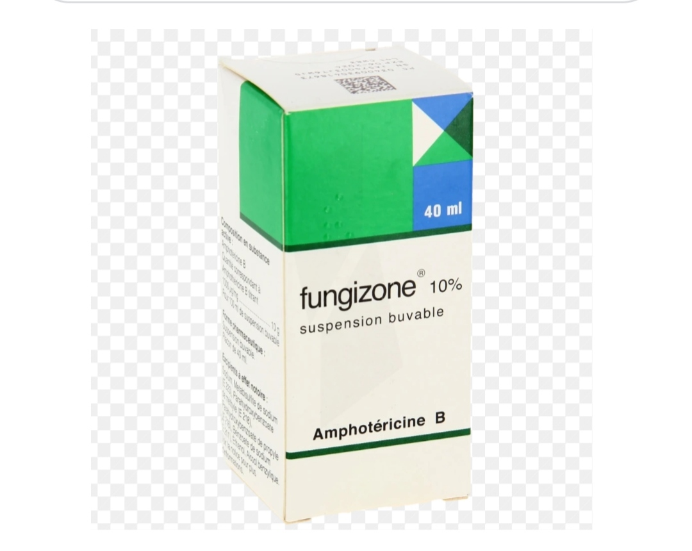
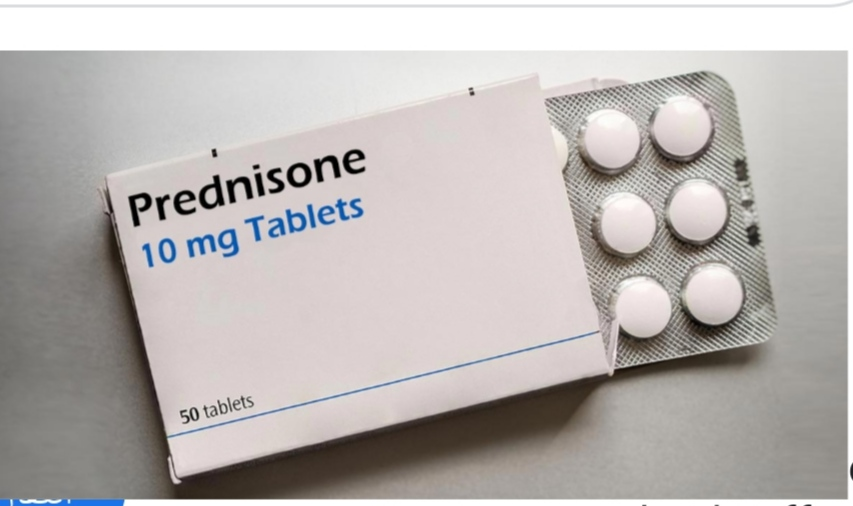

التهاب الرئة (Pneumonia)

التهاب الرئة هو عدوى تصيب الحويصلات الهوائية في الرئتين، مما يؤدي إلى امتلائها بالسوائل أو الصديد. يمكن أن يكون
التهاب
الرئة خفيفًا أو شديدًا، وقد يكون مهددًا للحياة، خاصةً لدى كبار السن، الأطفال، والأشخاص الذين يعانون من ضعف في
الجهاز
المناعي.
أعراض التهاب الرئة
تختلف الأعراض حسب شدة العدوى والعمر، ولكنها تشمل عادةً:
1. أعراض تنفسية:
سعال (قد يكون جافًا أو مع بلغم، وقد يحتوي البلغم على دم أو صديد).
ضيق التنفس (خاصةً عند بذل مجهود).
ألم في الصدر (يزداد عند السعال أو التنفس العميق).
2. أعراض عامة:
حمى (قد تكون عالية مع قشعريرة).
تعرق ليلي.
إرهاق وضعف عام.
فقدان الشهية.
3. أعراض خاصة بالأطفال وكبار السن:
عند الأطفال: قد تشمل الأعراض القيء، الخمول، أو صعوبة في الرضاعة.
عند كبار السن: قد تكون الأعراض أقل وضوحًا، مثل الارتباك أو انخفاض درجة حرارة الجسم.
أسباب التهاب الرئة
1. العدوى البكتيرية:
أشهر المسببات: المكورات الرئوية (Streptococcus pneumoniae).
قد تحدث بعد نزلة برد أو إنفلونزا.
2. العدوى الفيروسية:
فيروسات مثل فيروس الإنفلونزا،الفيروس المخلوي التنفسي[RSV]
، أو فيروس كورونا (بما في ذلك كوفيد-19).
3. العدوى الفطرية:
أكثر شيوعًا لدى الأشخاص الذين يعانون من ضعف في الجهاز المناعي.
4. استنشاق مواد ضارة:
مثل الطعام أو الشراب أو القيء (التهاب رئة استنشاقي).
5. عوامل الخطر:
التدخين.
الأمراض المزمنة (مثل السكري، أمراض القلب، أو أمراض الرئة).
ضعف الجهاز المناعي (مثل الإيدز أو العلاج الكيميائي).
العمر (الأطفال وكبار السن أكثر عرضة).
طرق علاج التهاب الرئة
يعتمد العلاج على سبب التهاب الرئة وشدته:
1. العلاج الدوائي:
المضادات الحيوية: إذا كان السبب بكتيريًا .
الأدوية المضادة للفيروسات: إذا كان السبب فيروسيًا.
الأدوية المضادة للفطريات: إذا كان السبب فطريًا.
2. الرعاية المنزلية:
الراحة الكافية.
شرب الكثير من السوائل لترقيق البلغم ومنع الجفاف.
استخدام مسكنات الألم وخافضات الحرارة (مثل الباراسيتامول أو الإيبوبروفين).
3. العلاج في المستشفى:
قد يحتاج المرضى الذين يعانون من أعراض شديدة أو مضاعفات إلى دخول المستشفى.
العلاج بالأكسجين أو التنفس الصناعي في الحالات الحرجة.
4. الوقاية:
التطعيم: لقاح المكورات الرئوية (Pneumococcal vaccine) ولقاح الإنفلونزا.
غسل اليدين بانتظام.
تجنب التدخين والتعرض للملوثات الهوائية.
التهاب الرئة: هو عدوى تصيب الرئتين، وقد تكون بكتيرية أو فيروسية أو فطرية. يعتمد العلاج على سبب العدوى، ويشمل
المضادات الحيوية، مضادات الفيروسات، أو الأدوية المضادة للفطريات. إليك بعض الأدوية الشائعة المستخدمة في علاج
التهاب الرئة:
1. المضادات الحيوية (للالتهاب الرئوي البكتيري):
أموكسيسيلين/كلافولانات (Amoxicillin/Clavulanate):
الاسم التجاري: Augmentin.
المصدر : [Amazon Pharmacy]
(https://pharmacy.amazon.com)

ليفوفلوكساسين (Levofloxacin):
الاسم التجاري: Levaquin.
المصدر : [GoodRx]
https://www.goodrx.com

2. مضادات الفيروسات (للالتهاب الرئوي الفيروسي):
أوسيلتاميفير (Oseltamivir):
الاسم التجاري: Tamiflu.
المصدر :[Rite Aid]
https://www.riteaid.com

ريمديسيفير (Remdesivir):
الاسم التجاري: Veklury.
المصدر : يُعطى عادة في المستشفيات.

3. مضادات الفطريات (للالتهاب الرئوي الفطري):
فلوكونازول (Fluconazole):
الاسم التجاري: Diflucan.
المصدر : [Amazon Pharmacy]
https://pharmacy.amazon.com

أمفوتيريسين ب (Amphotericin B):
الاسم التجاري: Fungizone.
المصدر : يُعطى عادة في المستشفيات.

4. الأدوية المساعدة (للتخفيف من الأعراض):
الكورتيكوستيرويدات (Corticosteroids):
الاسم التجاري: Prednisone (Deltasone).
المصدر : [GoodRx]
https://www.goodrx.com

نصائح قبل الاستخدام:
-
استشر الطبيب: قبل تناول أي دواء، خاصة إذا كنت تعاني من أمراض مزمنة أو تتناول أدوية أخرى.
-
الالتزام بالجرعة: لتجنب مقاومة المضادات الحيوية أو الآثار الجانبية.
-
الراحة وشرب السوائل: جزء مهم من العلاج.
إذا كنت تبحث عن دواء معين، يمكنك زيارة المواقع الإلكترونية المذكورة أو الصيدليات المحلية.
متى يجب زيارة الطبيب؟
إذا استمرت الأعراض لأكثر من بضعة أيام.
إذا كانت هناك صعوبة شديدة في التنفس.
إذا كان هناك ألم شديد في الصدر أو ارتفاع في درجة الحرارة.
إذا كان المريض من الفئات المعرضة للخطر (كبار السن، الأطفال، أو الأشخاص الذين يعانون من أمراض مزمنة).
التهاب الرئة يمكن أن يكون خطيرًا، لذا يجب التشخيص والعلاج المبكر لتجنب المضاعفات.